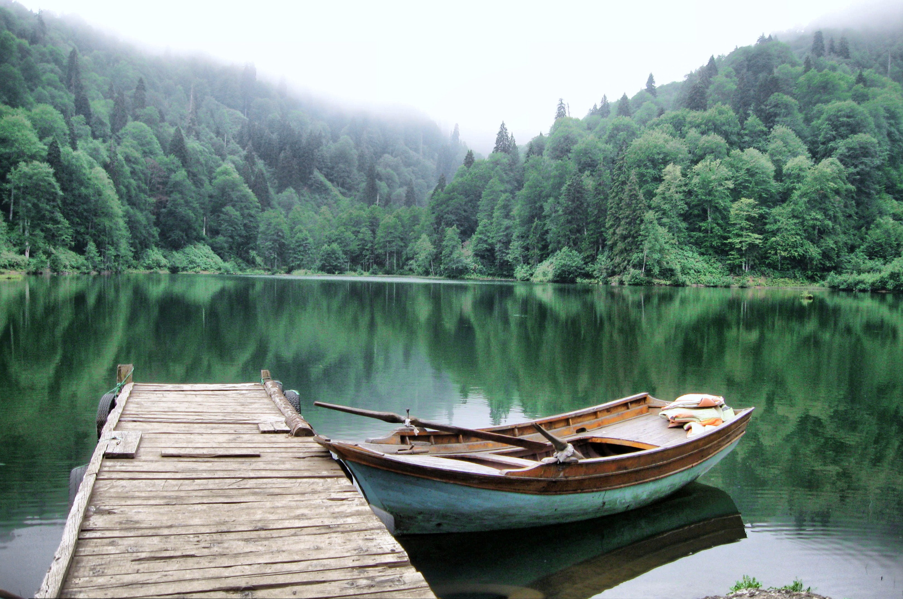

Yayla
The breath taking atmosphere of Artvin's yayla.

Historic Bridge
Artvin is where the nature meets history.

Karagol
Karagol means black lake
The breath taking atmosphere of Artvin's yayla.
Artvin is where the nature meets history.
Karagol means black lake
Geography
Artvin is an attractive area of steep valleys carved by the Çoruh River system, surrounded by high mountains of Kaçkar, Karçal and Yalnızçam (up to 3900 m) and forest with much national parkland including the Karagöl-Sahara, which contains the Şavşat and Borçka lakes. The weather in Artvin is very wet and mild at the coast, and as a result is heavily forested. This greenery runs from the top all the way down to the Black Sea coast. The rain turns to snow at higher altitudes, and the peaks are very cold in winter. The forests are home to brown bears and wolves. The Çoruh is now being dammed in 11 places for hydro-electric power, including the 249 m Deriner Dam and others at Borçka and Muratlı. Hopa mines, 1900's In addition to the vast majority ethnic Turks, the province is home to communities of Laz people and Hemshin peoples. Autochthonous Muslim Georgians form the majority in parts of Artvin Province east of the Çoruh River. Immigrant groups of Georgian origins, found scattered in Turkey are known as Chveneburi. In particular, there is a prominent community of Chveneburi Georgians many of them descendants of Muslim families from Georgia who migrated during the struggles between the Ottoman Turks and Russia during the 19th century. With such diverse peoples, Artvin has a rich variety of folk song and dance (see Arifana and Kochari for examples of folk culture). Local industries include bee-keeping especially in Macahel region. Artvin is traversed by the northeasterly line of equal latitude and longitude.
Write Us!
Fan? Drop a note.
Artvin,TURKEY
Phone: +90 1515151515
Email: artvin@turkey.gov
East of Artvin is the former Georgian capital Ardanuç with its famous castle which overlooks the longest canyon in the region. Seventy-one kilometres east of Artvin is Şavşat, an alpine village surrounded by meadows of wildflowers and butterflies, rushing streams and quaint chalets.